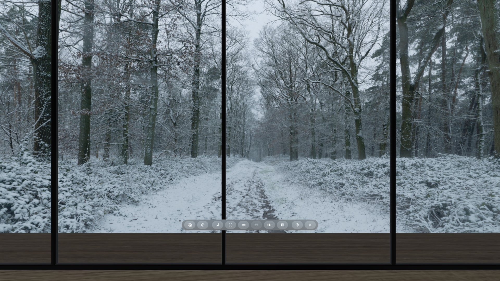

Customization · 10 minutes
Customize your Place.
Use quick switches when you need them, then shape the View, Room, and Seat without leaving your Place. Keep the result for this session or save it for next time.
Start with Controls
Open Controls in the Locus bar when you want an immediate on-or-off change. The available buttons depend on the Room and View.
Controls and Quick Settings change the same working values. Use Controls for speed; open Quick Settings when you want sliders, separate View, Room, and Seat tabs, or save and reset actions. Hide Desk also appears as a switch at the top of Quick Settings.
Customize the View
Open Quick Settings, then choose the View tab. Adjust one control at a time while looking at both the panorama and the Room.
- Sky brightness changes how bright the panorama itself looks.
- Ambient light changes how strongly the View lights the Room without changing the sky image.
- Contrast separates light and dark areas in the View.
- Color raises or lowers the View's color intensity.
- Turn view rotates the panorama around you. Use it to place the main subject in front of your seat or align a horizon feature with the Room.
- Add Sunlight adds directional light. When it is on, set its position, temperature, and strength to match the light visible in the panorama.
- Hide Room shows only the View for the current Virtual Space session.
- View sound (when the View carries ambience) turns the scenery audio on or off and sets its volume. Places can also filter to Views that come with sound.
Example: turn an overcast View and add light
This pair uses the same Atrium Loft seat and the same Snowbound Forest Paths View. The second image applies Turn view +35° and switches on Add Sunlight.

Look for two separate changes: Turn view moves the path toward the left side of the Room; Add Sunlight brightens the 3D floor. It does not redraw the overcast panorama.
Customize the Room
Choose the Room tab in Quick Settings when the selected Room offers visitor-controlled lights, sound, or motion.
- Switch on Room Lights. This is the same switch shown in Controls.
- Adjust All lights. Brighten or dim the Room's supported lights together.
- Tune individual light groups. A Room may offer brightness, warmth, or full color for some fixtures. Locus shows only the controls that Room supports.
- Adjust Room sound when the Room carries its own ambience—separate from View sound, with its own switch and volume.
- Adjust supported ambient motion. Experimental Rooms can offer an animation switch, speed, and replay interval.
If the light switch is off, brightness and color changes remain ready and appear when you switch the lights back on. Room sound settings last for the session unless the Room offers a save path.
Customize the Seat
Available in Locus 1.1.5 or later. Choose the Seat tab in Quick Settings to move where you sit inside the Room.
- Turn on Use Custom Position. Desk measuring pauses while a custom position is on.
- Step or turn. Move forward, back, sideways, up, or down, or turn, in steps of 1 cm, 5 cm, or 25 cm. Moves follow the direction you face.
- Stay inside the Room footprint and up to six metres high—through the roof if the view is better up there.
- Save for This Seat… keeps that position for the seat next time. Turn Use Custom Position off to return to the Room's authored seat.
Sofa and lounge seats appear in Teleport without a desk icon. Hide Desk at a desk seat clears the virtual desk for the rest of the visit; turn on Settings → Hide desk by default if you prefer that every time.
Save or undo changes
Quick Settings changes begin as a temporary working copy. Use the actions at the bottom of the active tab to decide what happens next.
- Revert Changes returns the active tab to your saved settings.
- More → Try Original Settings previews the creator's published settings without saving them.
- Save for This View… makes the current View settings that View's default in every Room and experience on this device.
- Save for This Room… keeps supported Room light and motion settings for that Room on this device.
- Save for This Seat… (Seat tab) keeps a custom seat position for that seat on this device.
For a larger preview before saving a View, open Places, open the View's menu, then choose Edit View. It works with the same saved View appearance.
Organize Places
- Rename an imported View when its filename is not useful. Built-in Views keep their published names.
- Mark a Room or View as a Favorite to bring it forward with Favorites First.
- Add tags such as Work, Night, Nature, or Shared.
- Search and filter by name, Favorites, Imported, resolution, tag, Animated Views, or Places that come with sound.
- Sort by Title, Recently Added, or Favorites First. Ordering and favorites are separate, so favorites can stay first in any order.
Names, favorites, and tags organize the library. They do not change the imported panorama or Room files. Places can also show when an installed View or Room has an update and install it in place.